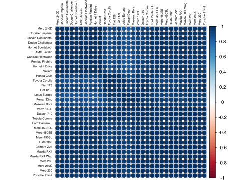
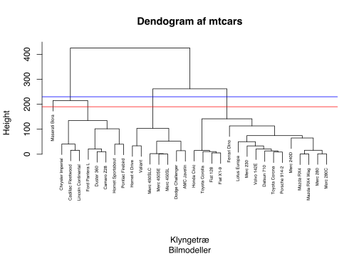

Kapitel 6 Klyngeanalyse
Vi har et datasæt bestående af 32 bilmodeller med 11 variable:
[, 1] mpg Miles/(US) gallon
[, 2] cyl Number of cylinders
[, 3] disp Displacement (cu.in.)
[, 4] hp Gross horsepower
[, 5] drat Rear axle ratio
[, 6] wt Weight (1000 lbs)
[, 7] qsec 1/4 mile time
[, 8] vs V/S
[, 9] am Transmission (0 = automatic, 1 = manual)
[,10] gear Number of forward gears
[,11] carb Number of carburetors
Man kunne godt formode man kunne gruppere de forskellige bilmodeller i forskellige grupper eller klynger udfra deres specifikationer. For at undersøge om vi på baggrund af tekniske karakteristika kan gruppere bilmodellerne, benytter vi klyngeanalyse. Bemærk i faktoranalysen grupperer vi variablene, i klyngeanalysen grupperer vi respondenterne, her altså bilerne.
Der findes overordnet 2 typer af klyngeudvælgelse, ikke-hierarkisk k-means metoden og hierarkisk klyngedannelse. k-means metoden benyttes, hvis vi har store datasæt hvor der kræves mange observationer, man vælger på forhånd hvor mange klynger man vil have. En hierarkisk klyngedannelse, hvor man starter med at hver respondent har sin egen klynge og man derefter sammenhober disse trin for trin kaldes den sammenhobede eller agglomerative metode. Vi benytter først den agglomerative metode, da vi ikke har en stort datasæt er denne klart at foretrække.
#install.packages("datasets")
library(datasets)
head(mtcars) #Vi kan se starten af datasættet med Head kommandoen## mpg cyl disp hp drat wt qsec vs am gear carb
## Mazda RX4 21.0 6 160 110 3.90 2.620 16.46 0 1 4 4
## Mazda RX4 Wag 21.0 6 160 110 3.90 2.875 17.02 0 1 4 4
## Datsun 710 22.8 4 108 93 3.85 2.320 18.61 1 1 4 1
## Hornet 4 Drive 21.4 6 258 110 3.08 3.215 19.44 1 0 3 1
## Hornet Sportabout 18.7 8 360 175 3.15 3.440 17.02 0 0 3 2
## Valiant 18.1 6 225 105 2.76 3.460 20.22 1 0 3 1Vi kan se at når vi sammenligner forskellige variable ser det ud til at der er forskellige grupper. Nedenfor ser vi fx de 32 biler plottet i et diagram efter hestekræfter og miles per gallon. Bilerne er farvekodet med antal cylindre.
#install.packages("ggplot2", dev='svg')
library("ggplot2")
ggplot(mtcars, aes(hp, mpg, color = cyl)) + geom_point() #Plot med kun punkter

Vi kan benytte t til at transponere data matricen, så kan vi tegne et corrplot, det er meget mørkt da alle bilerne er positivt korrelerede, men man kan ane nogle sammenhænge.
library(corrplot)
corrplot(cor(t(mtcars)), order = "hclust", tl.col='black', tl.cex=.5) #transponeret mtcars data, hclust betyder vi ordner efter variable der passer sammen
t(mtcars) betyder vi transponerer (vender) matricen, så ser vi i stedet på grupper af respondenter, som vi netop analyserer i klyngeanalysen.
Vi får nu R til at danne klynger vha. af hclust (hierarcical cluster) kommandoen, denne benytter default en metode der hedder complete til at finde ens klynger, der findes mange andre metoder. Algoritmen beregner afstandene mellem de forskellige bilmodeller vha. af den euklidiske metrik. Biler med kort afstand kommer i klynger sammen, biler med lang afstand kommer i forskellige klynger. Neden for ses afstandende mellem hver af de 32 biler, det er en meget stor 32 \(\times\) 32 matrice. Fx er afstanden mellem to forskellige biler som en Mazda RX4 og en Lincoln Continental 318.05 hvilket er en stor afstand i forhold til fx. Mazda RX4 og Mazda RX4 Wag på kun 0.62. Bemærk hvordan supersportsvognen Maserati Bora har store afstande til de fleste af de øvrige biler, Maseratien var en komfortabel, rummeligere og kraftigere og tungere sportsvogn end fx. Ferrari Dino.
## Mazda RX4 Mazda RX4 Wag Datsun 710 Hornet 4 Drive
## Mazda RX4 0.0000000 0.6153251 54.90861 98.11252
## Mazda RX4 Wag 0.6153251 0.0000000 54.89152 98.09589
## Datsun 710 54.9086059 54.8915169 0.00000 150.99352
## Hornet 4 Drive 98.1125212 98.0958939 150.99352 0.00000
## Hornet Sportabout 210.3374396 210.3358546 265.08316 121.02976
## Valiant 65.4717710 65.4392224 117.75470 33.55087
## Hornet Sportabout Valiant Duster 360 Merc 240D
## Mazda RX4 210.3374 65.47177 241.40765 50.15327
## Mazda RX4 Wag 210.3359 65.43922 241.40887 50.11461
## Datsun 710 265.0832 117.75470 294.47902 49.65848
## Hornet 4 Drive 121.0298 33.55087 169.42996 121.27397
## Hornet Sportabout 0.0000 152.12414 70.17673 241.50697
## Valiant 152.1241 0.00000 194.60945 89.59111
## Merc 230 Merc 280 Merc 280C Merc 450SE Merc 450SL
## Mazda RX4 25.46831 15.36419 15.67247 135.43070 135.40144
## Mazda RX4 Wag 25.32845 15.29569 15.58377 135.42548 135.39604
## Datsun 710 33.18038 66.93635 67.02614 189.19549 189.16317
## Hornet 4 Drive 118.24331 91.42240 91.46129 72.49643 72.43135
## Hornet Sportabout 233.49240 199.33450 199.34066 84.38885 84.36840
## Valiant 85.00796 60.29098 60.26557 90.69703 90.67697
## Merc 450SLC Cadillac Fleetwood Lincoln Continental
## Mazda RX4 135.47947 326.3396 318.0470
## Mazda RX4 Wag 135.47232 326.3355 318.0429
## Datsun 710 189.23454 381.0926 372.8012
## Hornet 4 Drive 72.57185 234.4404 227.9726
## Hornet Sportabout 84.43324 116.2804 108.0624
## Valiant 90.70930 266.6281 259.6304
## Chrysler Imperial Fiat 128 Honda Civic Toyota Corolla
## Mazda RX4 304.72034 93.26800 102.83076 100.6040
## Mazda RX4 Wag 304.71692 93.25310 102.82387 100.5888
## Datsun 710 359.30149 40.99338 52.77046 47.6535
## Hornet 4 Drive 218.15483 184.96897 191.55187 192.6714
## Hornet Sportabout 97.20491 302.03772 310.03246 309.5582
## Valiant 248.77133 152.11533 158.96158 159.8303
## Toyota Corona Dodge Challenger AMC Javelin Camaro Z28
## Mazda RX4 42.30752 163.11508 149.60472 233.22288
## Mazda RX4 Wag 42.26592 163.11342 149.60145 233.22487
## Datsun 710 12.96547 217.77958 204.31889 286.00492
## Hornet 4 Drive 138.53047 72.44039 61.36019 163.66326
## Hornet Sportabout 252.33320 48.98389 61.42742 70.96653
## Valiant 105.28764 103.43107 91.04443 187.84638
## Pontiac Firebird Fiat X1-9 Porsche 914-2 Lotus Europa
## Mazda RX4 248.67803 92.50484 44.40337 65.73284
## Mazda RX4 Wag 248.67620 92.49400 44.40736 65.73626
## Datsun 710 303.35839 39.88151 13.13571 25.09486
## Hornet 4 Drive 156.22403 184.44712 139.15795 163.23674
## Hornet Sportabout 40.00525 301.56695 254.14526 272.35824
## Valiant 188.52721 151.43794 106.05858 130.82482
## Ford Pantera L Ferrari Dino Maserati Bora Volvo 142E
## Mazda RX4 245.4247 66.76610 265.6454 39.18940
## Mazda RX4 Wag 245.4294 66.77642 265.6491 39.16260
## Datsun 710 297.2940 90.24155 309.7718 20.69394
## Hornet 4 Drive 180.1140 130.55230 229.3419 137.03633
## Hornet Sportabout 89.5934 215.06739 170.7094 248.00634
## Valiant 203.0178 106.56948 242.4393 104.18637Vi kan nu plotte en grafisk oversigt over bilerne. I nederste linje er den fineste inddeling, hvor samtlige biler er i deres egen klynge. Den blå linje med 3 skæringer i dendogrammet indikerer der er 3 klynger, den røde 4 klynger.
clusters <- hclust(dist(mtcars))
plot(clusters,cex=0.5,main = "Dendogram af mtcars",xlab = "Klyngetræ",sub="Bilmodeller")
abline(h = 190, col="red") #Tegn rød vandret linje h betyder horisontal
abline(h = 230, col="blue")
Hvis vi ønsker at undersøge en indeling med et bestemt antal klynger, kan vi bruge cutree i R, til at undersøge klyngerne i en skæring med fx. 4 klynger nærmere. Her ser vi som nævnt, Maserati Bora skiller sig ud ved at have sin egen klynge.
## Mazda RX4 Mazda RX4 Wag Datsun 710
## 1 1 1
## Hornet 4 Drive Hornet Sportabout Valiant
## 2 3 2
## Duster 360 Merc 240D Merc 230
## 3 1 1
## Merc 280 Merc 280C Merc 450SE
## 1 1 2
## Merc 450SL Merc 450SLC Cadillac Fleetwood
## 2 2 3
## Lincoln Continental Chrysler Imperial Fiat 128
## 3 3 1
## Honda Civic Toyota Corolla Toyota Corona
## 1 1 1
## Dodge Challenger AMC Javelin Camaro Z28
## 2 2 3
## Pontiac Firebird Fiat X1-9 Porsche 914-2
## 3 1 1
## Lotus Europa Ford Pantera L Ferrari Dino
## 1 3 1
## Maserati Bora Volvo 142E
## 4 1Vi kan benytte subset kommandoen til at se på hvilke variable der er i hver klynge, herunder ser vi på klynge 3.
## Hornet Sportabout Duster 360 Cadillac Fleetwood
## 3 3 3
## Lincoln Continental Chrysler Imperial Camaro Z28
## 3 3 3
## Pontiac Firebird Ford Pantera L
## 3 3Vi kan ligeledes sammenligne klyngeinddelingen med de enkelte variable og se om disse passer sammen. Fx. passer hp meget fint med inddelingen i klynger.
##
## clusterCut 4 6 8
## 1 11 5 0
## 2 0 2 5
## 3 0 0 8
## 4 0 0 1##
## clusterCut 10.4 13.3 14.3 14.7 15 15.2 15.5 15.8 16.4 17.3 17.8 18.1 18.7
## 1 0 0 0 0 0 0 0 0 0 0 1 0 0
## 2 0 0 0 0 0 2 1 0 1 1 0 1 0
## 3 2 1 1 1 0 0 0 1 0 0 0 0 1
## 4 0 0 0 0 1 0 0 0 0 0 0 0 0
##
## clusterCut 19.2 19.7 21 21.4 21.5 22.8 24.4 26 27.3 30.4 32.4 33.9
## 1 1 1 2 1 1 2 1 1 1 2 1 1
## 2 0 0 0 1 0 0 0 0 0 0 0 0
## 3 1 0 0 0 0 0 0 0 0 0 0 0
## 4 0 0 0 0 0 0 0 0 0 0 0 0##
## clusterCut 52 62 65 66 91 93 95 97 105 109 110 113 123 150 175 180 205 215
## 1 1 1 1 2 1 1 1 1 0 1 2 1 2 0 1 0 0 0
## 2 0 0 0 0 0 0 0 0 1 0 1 0 0 2 0 3 0 0
## 3 0 0 0 0 0 0 0 0 0 0 0 0 0 0 2 0 1 1
## 4 0 0 0 0 0 0 0 0 0 0 0 0 0 0 0 0 0 0
##
## clusterCut 230 245 264 335
## 1 0 0 0 0
## 2 0 0 0 0
## 3 1 2 1 0
## 4 0 0 0 1##
## clusterCut 1 2 3 4 6 8
## 1 5 6 0 4 1 0
## 2 2 2 3 0 0 0
## 3 0 2 0 6 0 0
## 4 0 0 0 0 0 1##
## clusterCut 1.513 1.615 1.835 1.935 2.14 2.2 2.32 2.465 2.62 2.77 2.78
## 1 1 1 1 1 1 1 1 1 1 1 1
## 2 0 0 0 0 0 0 0 0 0 0 0
## 3 0 0 0 0 0 0 0 0 0 0 0
## 4 0 0 0 0 0 0 0 0 0 0 0
##
## clusterCut 2.875 3.15 3.17 3.19 3.215 3.435 3.44 3.46 3.52 3.57 3.73 3.78
## 1 1 1 0 1 0 0 2 0 0 0 0 0
## 2 0 0 0 0 1 1 0 1 1 0 1 1
## 3 0 0 1 0 0 0 1 0 0 1 0 0
## 4 0 0 0 0 0 0 0 0 0 1 0 0
##
## clusterCut 3.84 3.845 4.07 5.25 5.345 5.424
## 1 0 0 0 0 0 0
## 2 0 0 1 0 0 0
## 3 1 1 0 1 1 1
## 4 0 0 0 0 0 0Hvis dendogrammet virker lidt uoverskueligt, kan man vælge ape pakken for at lave mere fancy plots, her er rigtig mange muligheder.
#install.packages("ape")
library("ape")
colors = c("red", "blue", "green", "pink")
clus4 = cutree(clusters, 4)
plot(as.phylo(clusters), type = "fan", tip.color = colors[clus4],
label.offset = 0, cex = 0.5)Herunder er et plot, hvor farvekoden er baseret på klyngerne.

Vi kunne også have brugt kmeans metoden, her skal vi så angive hvor mange klynger, vi ønsker i analysen. Her benytter vi K-means og får 4 klynger med 12, 9, 7, 4 biler. Vi kan se at når vi sammenligner grupperne med antal cylindre stemmer disse fint overens.
## K-means clustering with 4 clusters of sizes 16, 7, 4, 5
##
## Cluster means:
## mpg cyl disp hp drat wt qsec vs
## 1 24.50000 4.625000 122.2937 96.8750 4.002500 2.518000 18.54312 0.7500000
## 2 17.01429 7.428571 276.0571 150.7143 2.994286 3.601429 18.11857 0.2857143
## 3 14.60000 8.000000 340.5000 272.2500 3.675000 3.537500 15.08750 0.0000000
## 4 14.68000 8.000000 426.4000 200.0000 3.078000 4.660800 17.45800 0.0000000
## am gear carb
## 1 0.6875 4.125 2.437500
## 2 0.0000 3.000 2.142857
## 3 0.5000 4.000 5.000000
## 4 0.0000 3.000 3.200000
##
## Clustering vector:
## Mazda RX4 Mazda RX4 Wag Datsun 710
## 1 1 1
## Hornet 4 Drive Hornet Sportabout Valiant
## 2 4 2
## Duster 360 Merc 240D Merc 230
## 3 1 1
## Merc 280 Merc 280C Merc 450SE
## 1 1 2
## Merc 450SL Merc 450SLC Cadillac Fleetwood
## 2 2 4
## Lincoln Continental Chrysler Imperial Fiat 128
## 4 4 1
## Honda Civic Toyota Corolla Toyota Corona
## 1 1 1
## Dodge Challenger AMC Javelin Camaro Z28
## 2 2 3
## Pontiac Firebird Fiat X1-9 Porsche 914-2
## 4 1 1
## Lotus Europa Ford Pantera L Ferrari Dino
## 1 3 1
## Maserati Bora Volvo 142E
## 3 1
##
## Within cluster sum of squares by cluster:
## [1] 32837.997 11846.095 7654.146 10981.601
## (between_SS / total_SS = 89.8 %)
##
## Available components:
##
## [1] "cluster" "centers" "totss" "withinss"
## [5] "tot.withinss" "betweenss" "size" "iter"
## [9] "ifault"##
## 4 6 8
## 1 11 5 0
## 2 0 2 5
## 3 0 0 4
## 4 0 0 5Nedenfor ser vi på en inddeling med 3 klynger med henholdsvis 11, 4, 17 biler. Her passer klyngeinddelingen ikke helt så godt med antallet af cylindre.
##
## 4 6 8
## 1 0 2 5
## 2 0 0 9
## 3 11 5 0